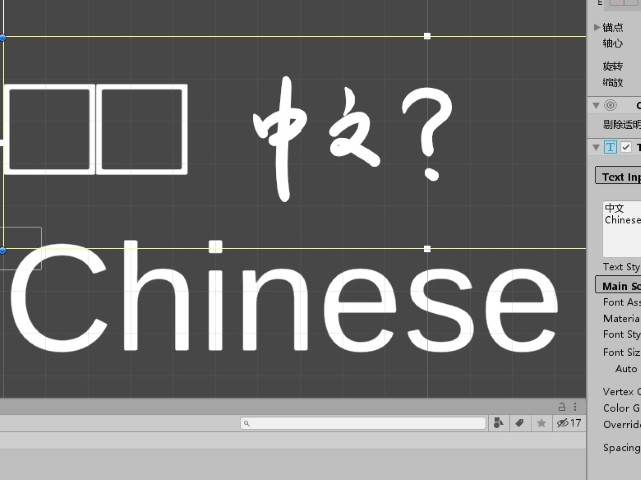

TextMesh Pro 显示中文字符的方法
这两天在写一个用于 Unity 项目中的对话系统时，了解到了 TextMesh Pro 这个玩意儿。它相比于普通的 Text 组件强了不少，但是居然不默认支持中文。咋办呢？
上网查了查，发现解决的方法很简单。这里我来做个演示。
使用 Font Asset Creator
首先打开 Font Asset Creator 这个工具。


Source Font File 字体文件。
Sampling Point Size 可以自己选择数值，一般情况下选 Auto Sizing 就可以。
Padding 这个数值会影响描边或者阴影的效果，一般保持默认。
Packing Method 选快速就可以。
Atlas Resolution 这个尺寸由字符数量等因素决定。中文字符比较多所以选择大一些。
Character Set 根据需求选择用于生成的字符集。这里我有一个现成的文件（包含数千个中文字符的文本文件），所以选择 Characters from File 这个选项。假设项目中所需字符数量少，那么选择 Custom Characters 并直接填入字符集也行。
Render Mode 渲染方式。
生成并保存 Font Asset
这些选项选好了之后，点击 Generate Font Atlas 开始生成 Font Asset 文件。因为字数比较多，所以生成速度可能会有些慢，耐心等待。
结束后可以在右边看到生成的结果。

值得注意的是，左下角的方框里包含了一些重要信息，其中 Point Size 这个数值会影响显示时的清晰度，还有 Missing characters 里统计了哪些字符生成失败（原因往往是字体里面不包含这些字符）。
确认无误后，点击 Save 或者 Save as 进行保存。
应用 Font Asset 至 TMP
保存之后，到 TMP 的 Inspector 里面修改 Font Asset 为刚刚保存的文件。

成功显示中文。

差不多就是这样¯(°_o)/¯
 wechat
wechat alipay
alipay